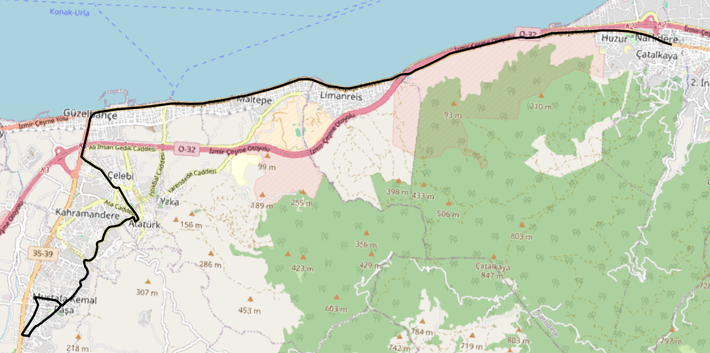
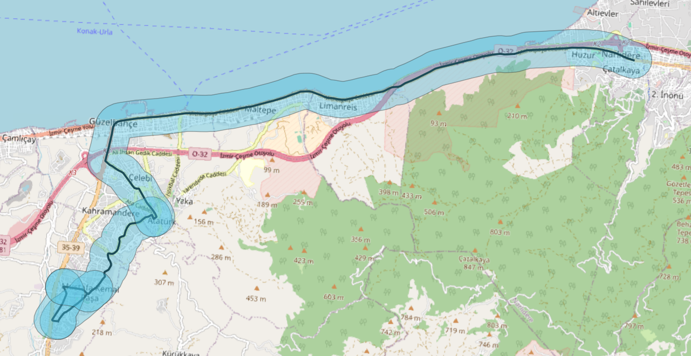
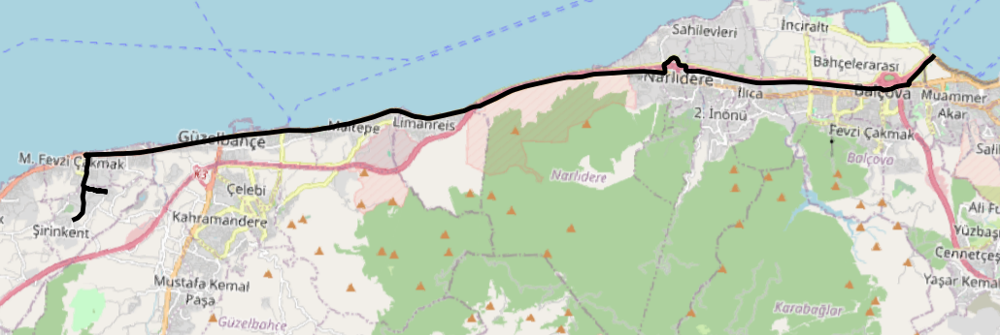
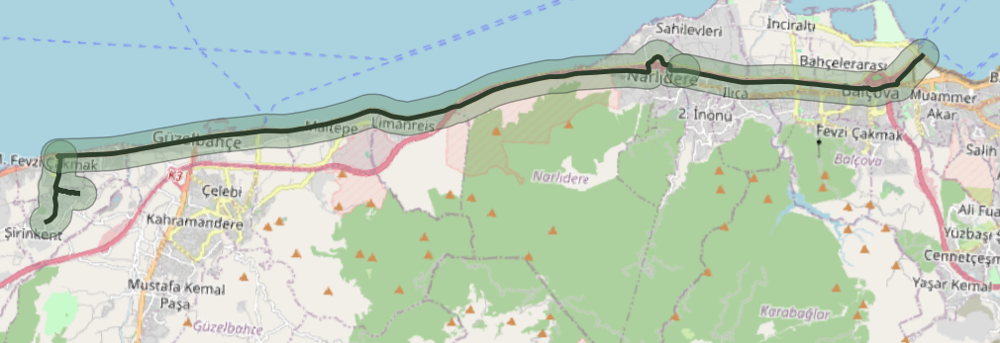

Dolmuş Hatları
Güzelbahçe'ye hizmet veren dolmuş güzergahları ve 800 m erişilebilirlik çapları
Dolmuş Hattı
2
Güzergah
Erişilebilirlik Çapı
800 m
Güzergah çevresinde
Güzelbahçe – Fahrettin Altay


Zeytinalanı – İnciraltı

